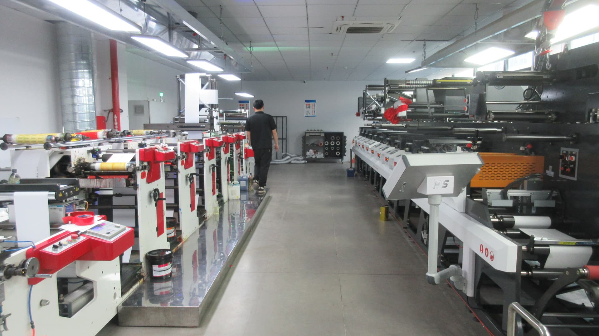

Short answer
Before sending labels to a co-packer, confirm label size, material, roll direction, core size, label gap, quantity per SKU, carton labels, delivery address and approved artwork. These details help the labels arrive ready for the packaging line, not just visually correct.
Co-packer label checklist
| Detail | What to confirm | Why it matters |
|---|---|---|
| Label size | Width, height, shape and corner radius. | Fits the bottle, jar, can, pouch or container. |
| Roll direction | Top-first, bottom-first, left-first or right-first. | Matches dispenser or labeling machine feed. |
| Core size | Inner roll core required by the co-packer. | Rolls must mount on the machine. |
| Label gap | Space between labels on the roll. | Affects machine sensor reading and application. |
| Quantity | Labels per SKU plus extra for setup and waste. | Prevents short shipment during production. |
| Carton packing | SKU labels, carton counts and shipping marks. | Helps the co-packer identify rolls quickly. |
Ask for machine details early
Some co-packers hand apply labels, while others use dispensers, semi-automatic labelers or production lines. Each setup may need different roll direction, core size and maximum roll diameter. A short machine photo or requirement sheet can prevent expensive rewinding or repacking later.
Plan SKU counts and extra labels
Food and beverage brands often print several flavors or seasonal designs. Count labels by SKU, not only by total order quantity. Co-packers may also need extra labels for setup, damaged containers, line checks and retained samples. Confirm this before placing the order.
What to send with a co-packer label quote
Related guides
Review label roll direction, prepare files with the artwork setup guide, and use the MOQ guide when planning test runs before co-packer production.
FAQ
Can labels ship directly to a co-packer?
Yes, if the delivery address, contact person, carton labels and schedule are confirmed before shipment.
Should front and back labels be on one roll?
It depends on the co-packer's application method. Some lines need alternating labels, while others prefer separate rolls.
What happens if roll direction is wrong?
The roll may need rewinding or manual workaround, which can delay packaging. Confirm direction before production.